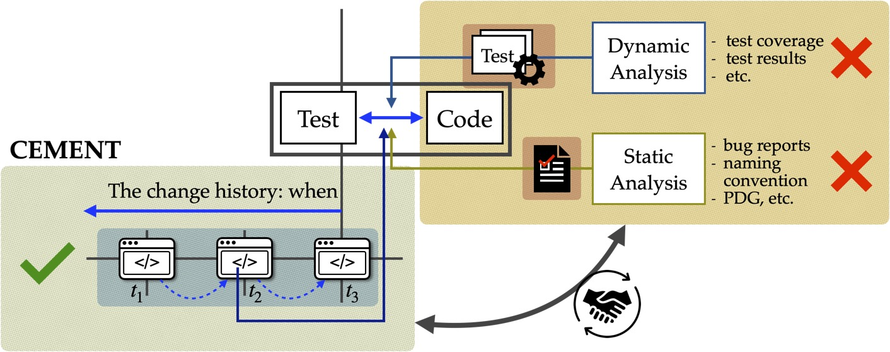

Establishing Co-evolutionary relationships between Test and Code
Software evolution is the continual development of software from its initial release to the end, adapting to various needs and changes during its life cycle. Despite many software development and maintenance advances, especially in automation, developers are still the primary workforce in writing and maintaining code. In other words, software evolves through the changes made by developers. We started with the simplest information source, i.e., time; we will extend the work to leverage more sophisticated relations between co-evolved modules by analyzing the context of developer changes. Our goal is to create a co-evolution module that infers evolutionary relationships between tests and code from their co-evolution history with respect to their diverse features.
CEMENT: Co-Evolution between Method and Tests
Mining evolutionary couplings between test and code association by analysing how the software has evolved. The main goal of this work is to investigate the general association between tests and code that accounts for evolutionary coupling from one of the most fundamental sources (e.g. change times) and to evaluate its usefulness by performing a case study on fault localization.
Related publications: ISSRE22
